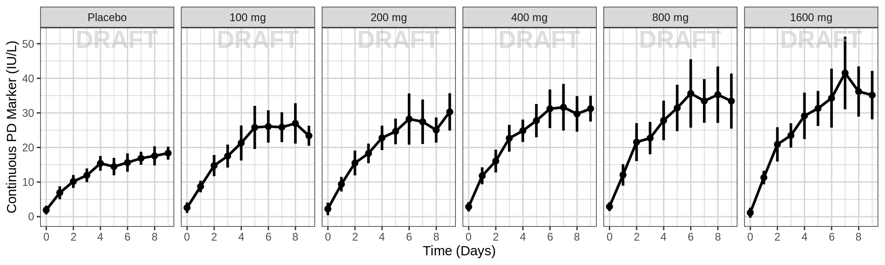
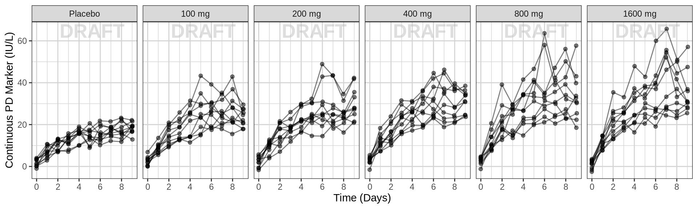
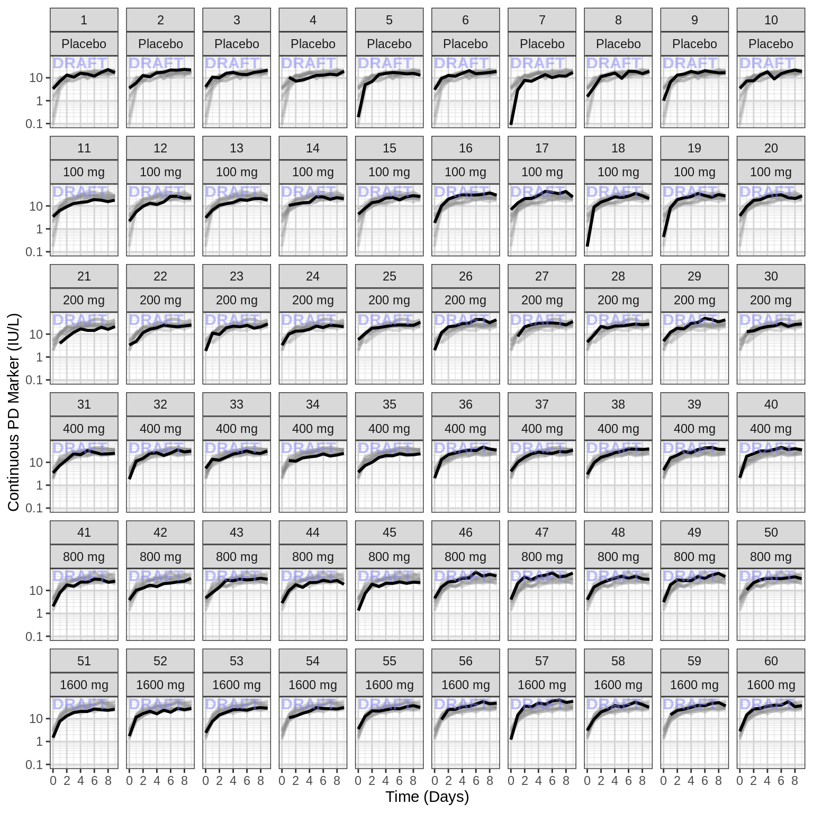
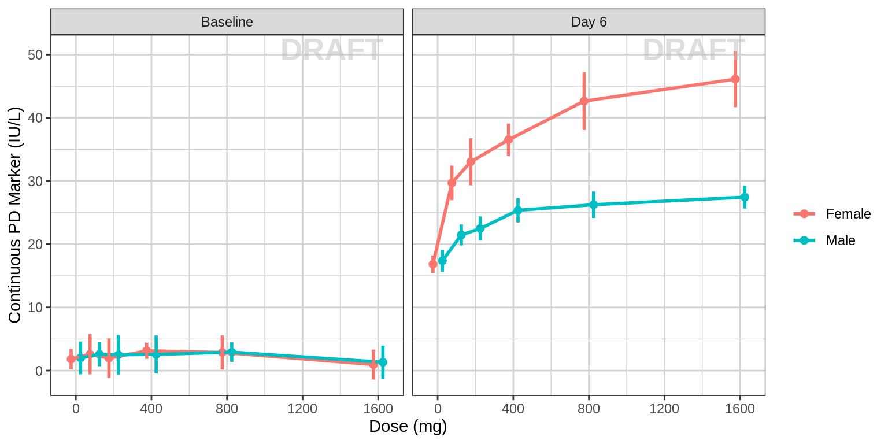

PD, Dose-Response - Continuous Endpoint
Overview
This document contains exploratory plots for continuous PD data as well as the R code that generates these graphs. The plots presented here are based on simulated data (see: PKPD Datasets). Data specifications can be accessed on Datasets and Rmarkdown template to generate this page can be found on Rmarkdown-Template. You may also download the Multiple Ascending Dose PK/PD dataset for your reference (download dataset).
Setup
# remove reference to home directory in libPaths
.libPaths(grep("home", .libPaths(), value=TRUE, invert=TRUE))
.libPaths(grep("usr", .libPaths(), value=TRUE, invert=TRUE))
# add localLib to libPaths for locally installed packages
.libPaths(c("localLib", .libPaths()))
# will load from first filepath first, then look in .libPaths for more packages not in first path
# version matches package in first filepath, in the case of multiple instances of a package
# library(rmarkdown)
library(gridExtra)
library(grid)
library(ggplot2)
library(dplyr)
library(RxODE)
library(caTools)
#flag for labeling figures as draft
draft.flag = TRUE
## ggplot settings
theme_set(theme_bw(base_size=12))Define Useful Graphics Functions
# annotation of plots with status of code
AnnotateStatus <- function(draft.flag, log.y=FALSE, log.x=FALSE, fontsize=7, color="grey") {
x.pos <- -Inf
if (log.x)
x.pos <- 0
y.pos <- -Inf
if (log.y)
y.pos <- 0
if(draft.flag) {
annotateStatus <- annotate("text",
label="DRAFT",
x=x.pos, y=y.pos,
hjust=-0.1, vjust=-1.0,
cex=fontsize,
col=color, alpha=0.7, fontface="bold")
} else {
annotateStatus <- NULL
}
return(annotateStatus)
}Load Dataset
my.data <- read.csv("../Data/Multiple_Ascending_Dose_Dataset2.csv")
# Define order for factors
my.data$TRTACT <- factor(my.data$TRTACT, levels = unique(my.data$TRTACT[order(my.data$DOSE)]))Provide an overview of the data
Summarize the data in a way that is easy to visualize the general trend of PD over time and between doses. Using summary statistics can be helpful, e.g. Mean +/- SE, or median, 5th & 95th percentiles. Consider either coloring by dose or faceting by dose. Depending on the amount of data one graph may be better than the other.
When looking at summaries of continuous PD over time, there are several things to observe. Note the number of doses and number of time points or sampling schedule. Observe the overall shape of the average profiles. How does the profile change over time? Does the effect appear to increase and decrease quickly on a short time scale, or does is occur over a longer time scale? Is there clear separation between the profiles for different doses? Does the effect appear to increase with increasing dose? Do you detect a saturation of the effect?
PD marker over time, colored by Dose, mean (95% CI) percentiles by nominal time
data_to_plot <- my.data[my.data$CMT==3,]
data_to_plot$TRTACT <- factor(data_to_plot$TRTACT, levels = rev(levels(data_to_plot$TRTACT)))
gg <- ggplot(data = data_to_plot,
aes(x=NOMTIME/24,y=LIDV, color = TRTACT, fill = TRTACT))+theme_bw()
gg <- gg + stat_summary(geom = "errorbar", size = 1, width = 0,
fun.data = function(y){
y <- stats::na.omit(y)
data.frame(
y = mean(y),
ymin = mean(y)-qt(0.975,length(y))*sqrt(stats::var(y)/length(y)),
ymax = mean(y)+qt(0.975,length(y))*sqrt(stats::var(y)/length(y)))
})
gg <- gg + stat_summary(geom="point", fun.y=mean, size = 2)
gg <- gg + stat_summary(aes(group = TRTACT), geom="line",fun.y=mean, size = 1)
gg <- gg + guides(color=guide_legend(""),fill=guide_legend(""))
gg <- gg + xlab("Time (days)") + scale_x_continuous(breaks=seq(-1,9,1))
gg <- gg + ylab("Continuous PD Marker (IU/L)")
gg
PD marker over time, faceted by Dose, mean (95% CI) percentiles by nominal time
data_to_plot <- my.data[my.data$CMT==3,]
gg <- ggplot(data = data_to_plot,
aes(x=NOMTIME/24,y=LIDV))+theme_bw()
gg <- gg + stat_summary(geom = "errorbar", size = 1,
fun.data = function(y){
y <- stats::na.omit(y)
data.frame(
y = mean(y),
ymin = mean(y)-qt(0.975,length(y))*sqrt(stats::var(y)/length(y)),
ymax = mean(y)+qt(0.975,length(y))*sqrt(stats::var(y)/length(y)))
})
gg <- gg + stat_summary(geom="point", fun.y=mean, size=2)
gg <- gg + guides(color=guide_legend(""),fill=guide_legend(""))
gg <- gg + xlab("Time (days)") + scale_x_continuous(breaks=seq(-1,9,1))
gg <- gg + facet_grid(~TRTACT)
gg <- gg + ylab("Continuous PD Marker (IU/L)")
ggExplore variability
Use spaghetti plots to visualize the extent of variability between individuals. The wider the spread of the profiles, the higher the between subject variability. Distinguish different doses by color, or separate into different panels. If coloring by dose, do the individuals in the different dose groups overlap across doses? Dose there seem to be more variability at higher or lower concentrations?
PD marker over time, colored by Dose, dots & lines grouped by individuals
data_to_plot <- my.data[my.data$CMT==3,]
data_to_plot$TRTACT <- factor(data_to_plot$TRTACT, levels = rev(levels(data_to_plot$TRTACT)))
gg <- ggplot(data = data_to_plot, aes(x=TIME/24,y=LIDV))+theme_bw()
gg <- gg + geom_line(aes(group=ID, color =factor(TRTACT)))
gg <- gg + guides(color=guide_legend(""),fill=guide_legend(""))
gg <- gg + xlab("Time (days)") + scale_x_continuous(breaks=seq(-1,9,1))
gg <- gg + ylab("Continuous PD Marker (IU/L)")
gg
PD marker over time, faceted by Dose, dots & lines grouped by individuals
data_to_plot <- my.data[my.data$CMT==3,]
gg <- ggplot(data = data_to_plot, aes(x=TIME/24,y=LIDV))+theme_bw()
gg <- gg + geom_line(aes(group=ID),alpha = 0.5)
gg <- gg + geom_point(alpha = 0.5)
gg <- gg + guides(color=guide_legend(""),fill=guide_legend(""))
gg <- gg + xlab("Time (days)") + scale_x_continuous(breaks=seq(-1,9,1))
gg <- gg + facet_grid(~TRTACT)
gg <- gg + ylab("Continuous PD Marker (IU/L)")
gg
Explore Irregularities in Profiles
Plot individual profiles in order to inspect them for any irregularities. Inspect the profiles for outlying data points that may skew results or bias conclusions.
PD marker over time, faceted by individual, individual line plots overlaid on gray spaghetti plots for that dose group
Plotting individual profiles on top of gray spaghetti plots puts individual profiles into context, and may help identify outlying individuals for further inspection.
data_to_plot <- my.data[my.data$CMT==3,]
data_to_plot2 <- NULL
for(id in unique(data_to_plot$ID)){
if(is.null(data_to_plot2)){
data_to_plot2 <- data.frame(data_to_plot[data_to_plot$DOSE==data_to_plot[data_to_plot$ID==id,]$DOSE,], ID2 = id)
}else{
data_to_plot2 <- rbind(data_to_plot2,
data.frame(data_to_plot[data_to_plot$DOSE==data_to_plot[data_to_plot$ID==id,]$DOSE,], ID2 = id))
}
}
temp <- data_to_plot2$ID
data_to_plot2$ID = data_to_plot2$ID2
data_to_plot2$ID2 <- temp
gg <- ggplot() + theme_bw(base_size = 12)
gg <- gg + geom_line(data = data_to_plot2,
aes(x = TIME/24, y = LIDV, group = ID2),
size = 1, color = rgb(0.5,0.5,0.5), alpha = 0.3)
# gg <- gg + geom_point(data = data_to_plot2,
# aes(x = TIME/24, y = LIDV, group = ID2),
# size = 1, color = rgb(0.5,0.5,0.5), alpha = 0.3)
gg <- gg + geom_line(data = data_to_plot,
aes(x = TIME/24, y = LIDV), size = 1)
# gg <- gg + geom_point(data = data_to_plot, aes(x = TIME/24, y = LIDV,group = PROFDAY), size = 1)
gg <- gg + scale_y_log10() + scale_x_continuous(breaks = seq(0,max(my.data$TIME/24)+1,7))
gg <- gg + xlab("Time (days)") + ylab("Continuous PD Marker (IU/L)")
gg <- gg + theme( legend.position="none")
gg + facet_wrap(~ID+TRTACT,ncol = length(unique(data_to_plot$ID))/length(unique(data_to_plot$DOSE)))
Explore covariate effects on PD
Stratify by covariates of interest to explore whether any key covariates impact response. For examples of plots and code startifying by covariate, see Single Ascending Dose Covariate Section
Warning Be careful of interpreting covariate effects on PD. Covariate effects on PD could be the result of covariate effects on PK transfering to PD through the PK/PD relationship.
Explore Dose-Response Relationship
One of the key questions when looking at PD markers is to determine if there is a dose-response relationship, and if there is, what dose is necessary to achieve the desired effect? Simple dose-response plots can give insight into these questions.
PD marker by Dose, for endpoint of interest, mean (95% CI) by Dose
Plot PD marker against dose. Using summary statistics can be helpful, e.g. Mean +/- SE, or median, 5th & 95th percentiles.
Here are some questions to ask yourself when looking at Dose-Response plots: Do you see any relationship? Does response increase (decrease) with increasing dose? Are you able to detect a plateau or emax (emin) on the effect? If so, around what dose does this occur?
Warning: Even if you don’t see an Emax, that doesn’t mean there isn’t one. Be very careful about using linear models for Dose-Response relationships. Extrapolation outside of the observed dose range could indicate a higher dose is always better (even if it isn’t).
data_to_plot <- my.data[my.data$CMT==3,]
data_to_plot$DAY_label <- paste("Day", data_to_plot$PROFDAY)
data_to_plot$DAY_label[data_to_plot$DAY_label=="Day 0"] = "Baseline"
data_to_plot <- data_to_plot[data_to_plot$DAY_label%in%c("Baseline","Day 6"),]
gg <- ggplot(data = data_to_plot, aes(x=DOSE,y=LIDV, group = DOSE))+theme_bw()
gg <- gg + stat_summary(geom = "errorbar", size = 1,
fun.data = function(y){
y <- stats::na.omit(y)
data.frame(
y = mean(y),
ymin = mean(y)-qt(0.975,length(y))*sqrt(stats::var(y)/length(y)),
ymax = mean(y)+qt(0.975,length(y))*sqrt(stats::var(y)/length(y)))
})
gg <- gg + stat_summary(geom="point", fun.y=mean)
gg <- gg + guides(color=guide_legend(""),fill=guide_legend(""))
gg <- gg + ylab("Continuous PD Marker (IU/L)") + xlab("Dose (mg)")
gg + facet_grid(~DAY_label)
PD marker by Dose, faceted by visit, mean (95% CI) by Dose
Sometimes the crossectional Dose-Response curve which looks only at one timepoint defined in the protocol can obscure certain characteristics of the dose-response relationship. For example, if the response variable is much delayed compared to PK the maximal PD effect could occur much later than steady state PK is achieved. Looking only at the defined clinical endpoint has the potential miss this, especially in early clinical trials before the time course of the effect has been characterized. Looking at longitudinal PD over time (as in previous sections above) can help to uncover these trends. It may also be helpful to plot the cross-sectional Dose-Response curves for different time points throughout the study.
data_to_plot <- my.data[my.data$CMT==3,]
data_to_plot$DAY_label <- paste("Day", data_to_plot$PROFDAY)
data_to_plot$DAY_label[data_to_plot$DAY_label=="Day 0"] = "Baseline"
data_to_plot <- data_to_plot[data_to_plot$DAY_label%in%c("Baseline","Day 2", "Day 4", "Day 6"),]
gg <- ggplot(data = data_to_plot, aes(x=DOSE,y=LIDV, group = DOSE))+theme_bw()
gg <- gg + stat_summary(geom = "errorbar", size = 1,
fun.data = function(y){
y <- stats::na.omit(y)
data.frame(
y = mean(y),
ymin = mean(y)-qt(0.975,length(y))*sqrt(stats::var(y)/length(y)),
ymax = mean(y)+qt(0.975,length(y))*sqrt(stats::var(y)/length(y)))
})
gg <- gg + stat_summary(geom="point", fun.y=mean)
gg <- gg + guides(color=guide_legend(""),fill=guide_legend(""))
gg <- gg + ylab("Continuous PD Marker (IU/L)") + xlab("Dose (mg)")
gg + facet_grid(~DAY_label)
Explore covariate effects on Dose-Response relationship
data_to_plot <- my.data[my.data$CMT==3,]
data_to_plot$DAY_label <- paste("Day", data_to_plot$PROFDAY)
data_to_plot$DAY_label[data_to_plot$DAY_label=="Day 0"] = "Baseline"
data_to_plot <- data_to_plot[data_to_plot$DAY_label%in%c("Baseline","Day 6"),]
gg <- ggplot(data = data_to_plot, aes(x=DOSE+0.1*DOSE*(SEX=="Female"),y=LIDV, color = SEX))+theme_bw()
gg <- gg + stat_summary(geom = "errorbar", size = 1,
fun.data = function(y){
y <- stats::na.omit(y)
data.frame(
y = mean(y),
ymin = mean(y)-qt(0.975,length(y))*sqrt(stats::var(y)/length(y)),
ymax = mean(y)+qt(0.975,length(y))*sqrt(stats::var(y)/length(y)))
})
gg <- gg + stat_summary(geom="point", fun.y=mean)
gg <- gg + stat_summary(geom="line", fun.y=mean)
gg <- gg + guides(color=guide_legend(""),fill=guide_legend(""))
gg <- gg + ylab("Continuous PD Marker (IU/L)") + xlab("Dose (mg)")
gg + facet_grid(~DAY_label)
R Session Info
sessionInfo()## R version 3.6.1 (2019-07-05)
## Platform: x86_64-apple-darwin15.6.0 (64-bit)
## Running under: macOS Mojave 10.14.3
##
## Matrix products: default
## BLAS: /System/Library/Frameworks/Accelerate.framework/Versions/A/Frameworks/vecLib.framework/Versions/A/libBLAS.dylib
## LAPACK: /Library/Frameworks/R.framework/Versions/3.6/Resources/lib/libRlapack.dylib
##
## locale:
## [1] en_US.UTF-8/en_US.UTF-8/en_US.UTF-8/C/en_US.UTF-8/en_US.UTF-8
##
## attached base packages:
## [1] grid stats graphics grDevices utils datasets methods
## [8] base
##
## other attached packages:
## [1] DT_0.8 RxODE_0.9.1-6 haven_2.1.1 readr_1.3.1
## [5] readxl_1.3.1 xtable_1.8-4 tidyr_0.8.3 caTools_1.17.1.2
## [9] zoo_1.8-6 dplyr_0.8.3 ggplot2_3.2.1 gridExtra_2.3
##
## loaded via a namespace (and not attached):
## [1] tidyselect_0.2.5 xfun_0.9 purrr_0.3.2 lattice_0.20-38
## [5] colorspace_1.4-1 vctrs_0.2.0 htmltools_0.3.6 yaml_2.2.0
## [9] rlang_0.4.0 pillar_1.4.2 glue_1.3.1 withr_2.1.2
## [13] tweenr_1.0.1 plyr_1.8.4 stringr_1.4.0 munsell_0.5.0
## [17] gtable_0.3.0 cellranger_1.1.0 htmlwidgets_1.3 mvnfast_0.2.5
## [21] memoise_1.1.0 evaluate_0.14 knitr_1.24 forcats_0.4.0
## [25] markdown_1.1 Rcpp_1.0.2 scales_1.0.0 backports_1.1.4
## [29] farver_1.1.0 ggforce_0.3.1 hms_0.5.1 digest_0.6.20
## [33] lotri_0.1.1 stringi_1.4.3 polyclip_1.10-0 tools_3.6.1
## [37] bitops_1.0-6 magrittr_1.5 lazyeval_0.2.2 tibble_2.1.3
## [41] PreciseSums_0.3 crayon_1.3.4 pkgconfig_2.0.2 zeallot_0.1.0
## [45] MASS_7.3-51.4 assertthat_0.2.1 rmarkdown_1.15 R6_2.4.0
## [49] units_0.6-4 compiler_3.6.1